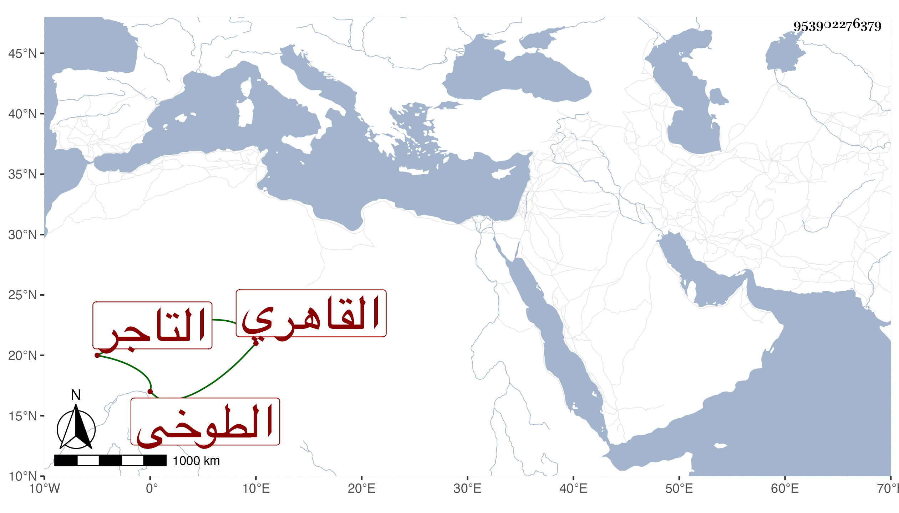

0902Sakhawi.DawLamic.ITO20230111-ara1.EIS1600.953902276379
Biography ID: 953902276379
355
ستيتة ابنة علي الطوخى القاهري زوج الشهاب السمخراطي التاجر وشقيقة إبراهيم . كانت عفيفة أثكلت أولادا ، وحجت غير مرة وجاورت مع زوجها العام الماضي فكانت جل إقامتها متضعفة ورجعت وهي كذلك فلم تلبث أن ماتت في يوم الاربعاء عاشر صفر سنة ثمان وثمانين وصلى عليها من الغد وقد جازت الخمسين ، عوضها الله الجنة .
